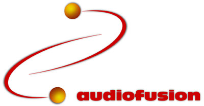
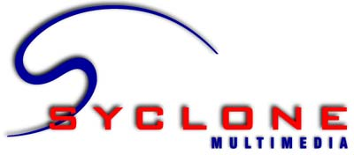
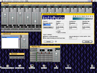

AudioFusion est une suite de logiciels audio / vidéo pour la plateforme PowerMacintosh dévelopée en collaboration avec la société canadienne Syclone Multimédia.

 Le principal produit, AudioFusion TWS (Techno WorkStation) - anciennement Hit Factory - est un logiciel de musique novateur pour Power Macintosh, que je développe depuis près de deux ans.
Je vous invite à consulter le nouveau site officiel. Vous y trouverez des logiciels, des utilitaires gratuits et des samples!
Ils en ont parlé!:
- KeyBoards - France
- HomeStudio - France
- Micro & Musique - France
- SVM Mac - France
- Sono Magazine - France
- KeyBoards - USA
- Online Today - USA
- Future Music - Angleterre
- Keys - Allemagne
- MacFan Internet - Japon
- MacUser - Japon
- ...